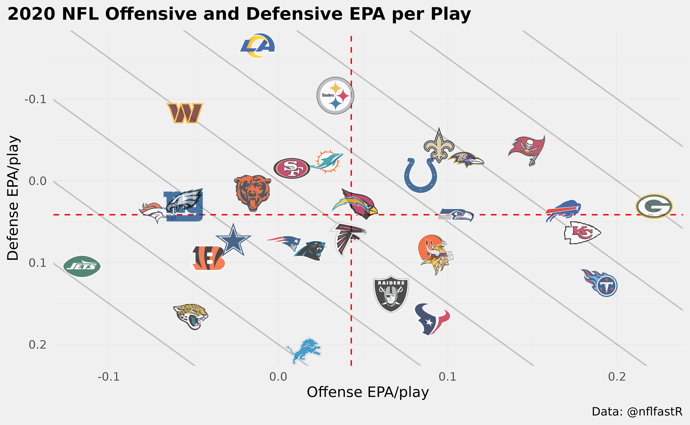
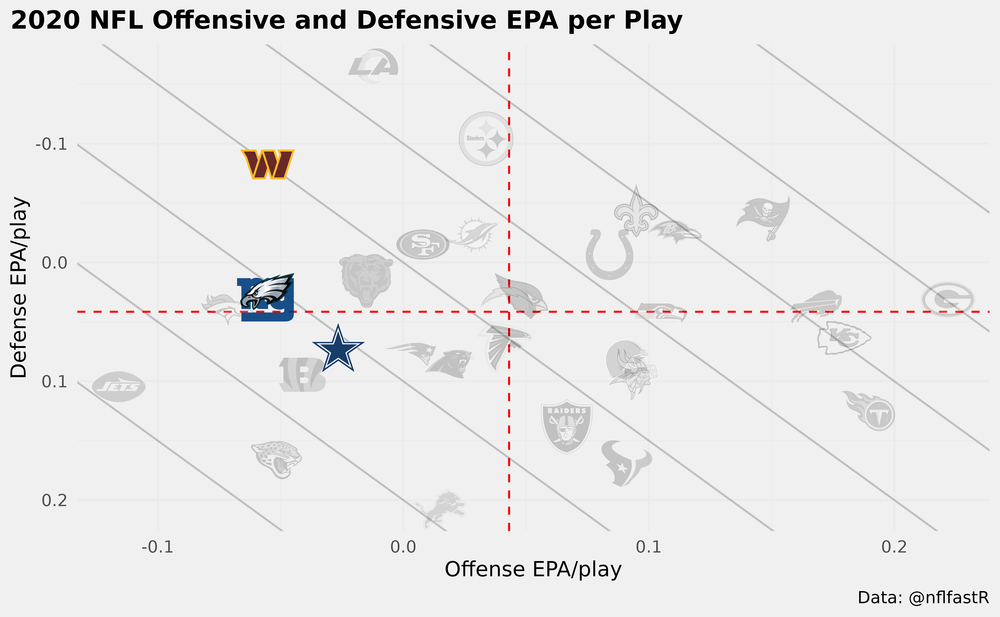
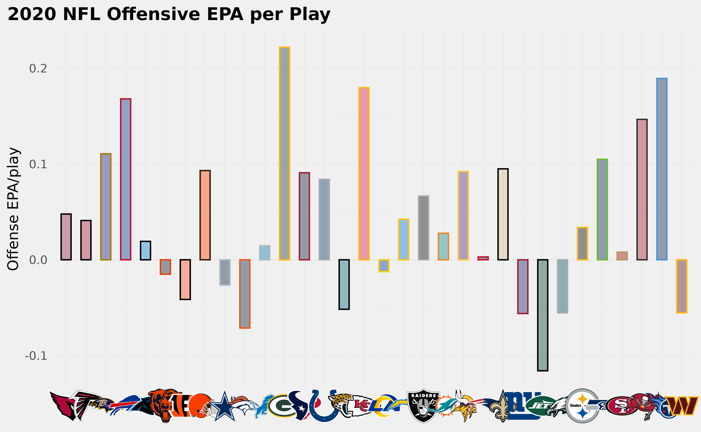
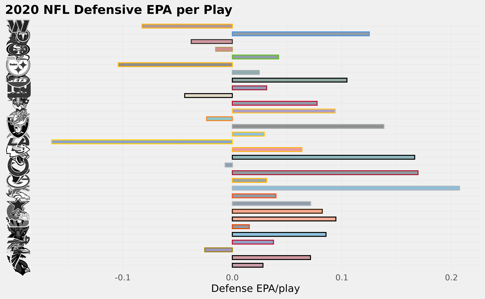
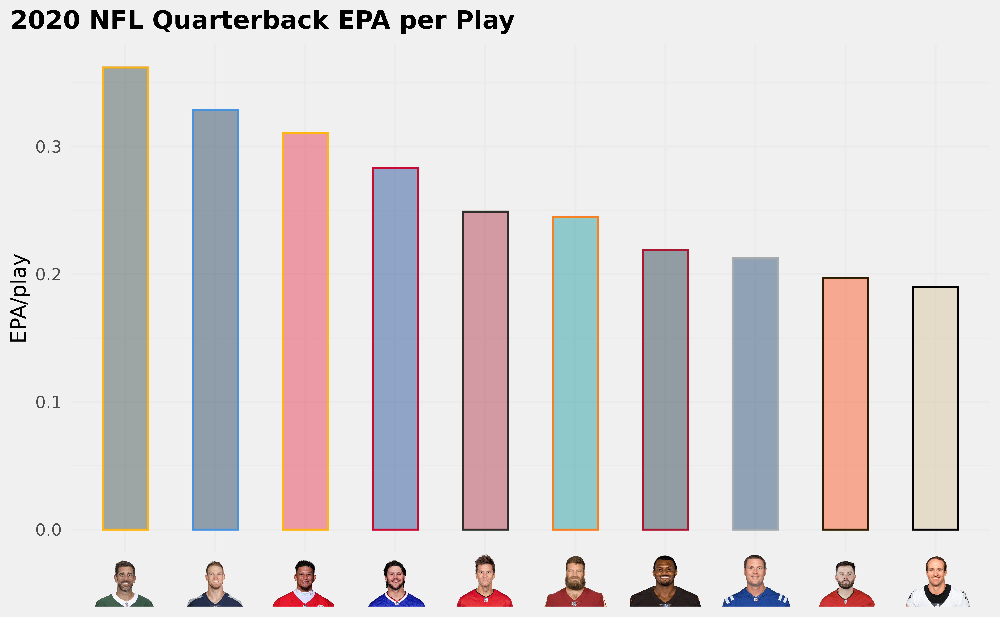
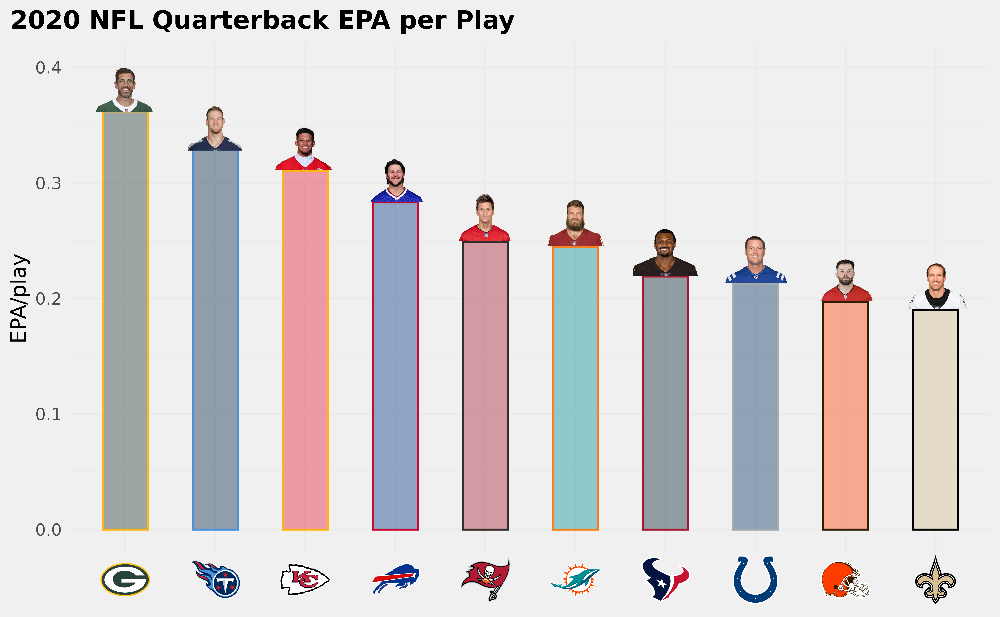
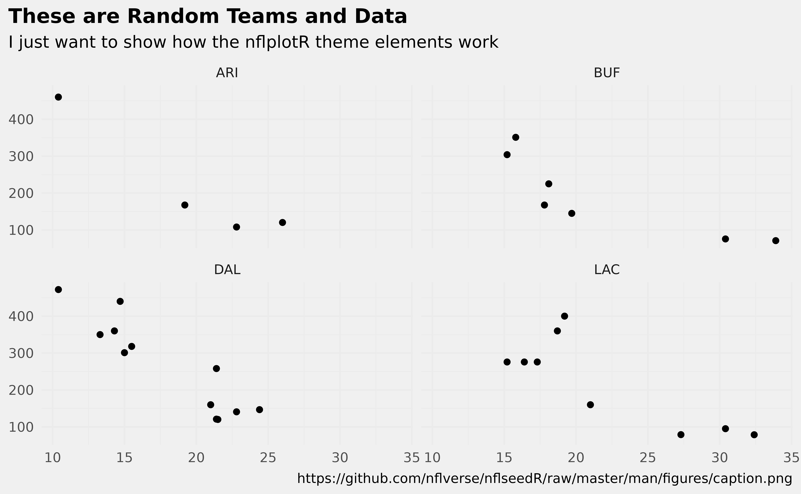
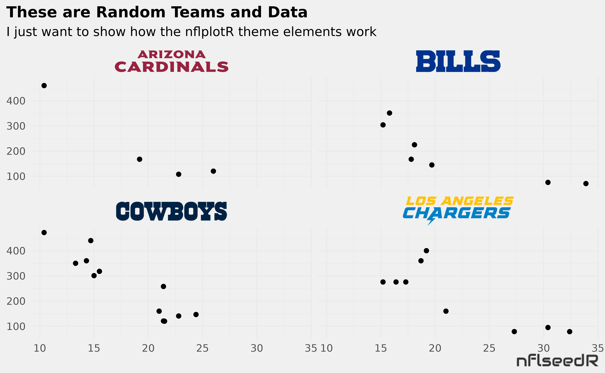
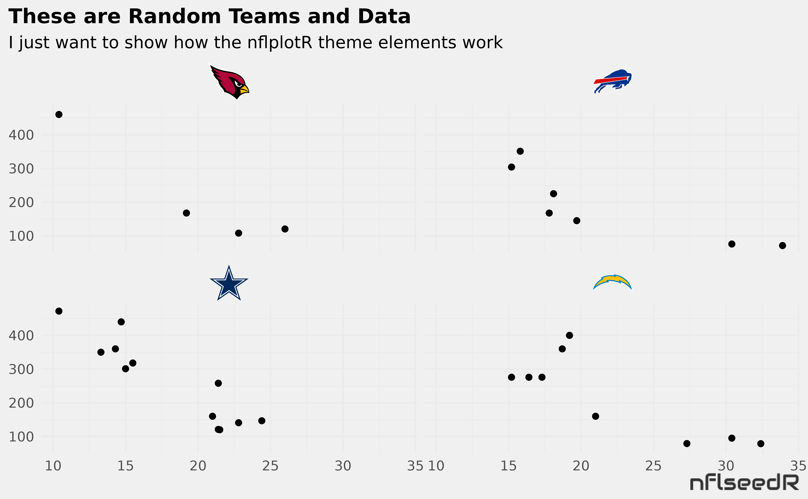

Preface
Working with publicly available NFL data often results in a desire to visualize the findings of one’s analyses (often in ggplot2) and then publish these visualizations. In team-level analyses, it appears that such visualizations are more aesthetically pleasing when their logos are used instead of team abbreviations. Another way to visually distinguish teams is to use their primary or secondary team colors.
nflplotR provides ggplot2 extensions that greatly simplify these tasks and avoid typical problems.
Long story short: the only thing that is required to use NFL team logos or team colors in a ggplot is a variable in the plot data that holds official NFL team abbreviations.
Install the Package
The easiest way to get nflplotR is to install it from CRAN with:
install.packages("nflplotR")To get a bug fix or to use a feature from the development version, you can install the development version of nflplotR either from GitHub with:
if (!require("remotes")) install.packages("remotes")
remotes::install_github("nflverse/nflplotR")or prebuilt from the development repo with:
install.packages("nflplotR", repos = "https://nflverse.r-universe.dev")Typical Use Cases
Let’s look at some typical use cases for nflplotR using NFL play-by-play data. In a first step we load all necessary packages.
We will load the data and compute each team’s offensive and defensive EPA per play for the 2020 regular season. We will also compute the top 10 Quarterbacks in EPA per play.
pbp <- nflreadr::load_pbp(2020) %>%
dplyr::filter(season_type == "REG") %>%
dplyr::filter(!is.na(posteam) & (rush == 1 | pass == 1))
offense <- pbp %>%
dplyr::group_by(team = posteam) %>%
dplyr::summarise(off_epa = mean(epa, na.rm = TRUE))
defense <- pbp %>%
dplyr::group_by(team = defteam) %>%
dplyr::summarise(def_epa = mean(epa, na.rm = TRUE))
combined <- offense %>%
dplyr::inner_join(defense, by = "team")
qbs <- pbp %>%
dplyr::filter(pass == 1 | rush == 1) %>%
dplyr::filter(down %in% 1:4) %>%
dplyr::group_by(id) %>%
dplyr::summarise(
name = dplyr::first(name),
team = dplyr::last(posteam),
plays = dplyr::n(),
qb_epa = mean(qb_epa, na.ram = TRUE)
) %>%
dplyr::filter(plays > 200) %>%
dplyr::slice_max(qb_epa, n = 10)Logos in Scatter Plots
Offensive and Defensive EPA per Play are typically used for NFL team tiers. Let’s create this scatter plot and play around with the capabilities of the logo geom.
ggplot2::ggplot(combined, aes(x = off_epa, y = def_epa)) +
ggplot2::geom_abline(slope = -1.5, intercept = seq(0.4, -0.3, -0.1), alpha = .2) +
nflplotR::geom_mean_lines(aes(v_var = off_epa , h_var = def_epa)) +
nflplotR::geom_nfl_logos(aes(team_abbr = team), width = 0.065, alpha = 0.7) +
ggplot2::labs(
x = "Offense EPA/play",
y = "Defense EPA/play",
caption = "Data: @nflfastR",
title = "2020 NFL Offensive and Defensive EPA per Play"
) +
ggplot2::theme_minimal() +
ggplot2::theme(
plot.title = ggplot2::element_text(face = "bold"),
plot.title.position = "plot"
) +
ggplot2::scale_y_reverse()
There is a lot going on here:
- we add mean lines for both x-axis and y-axis in a single line,
- we add team logos that are printed in correct aspect ratio regardless of plot dimensions and
- we add an alpha channel to the team logos (which can also be done inside an aesthetic which means it can differ for each team).
What if we would like to highlight just a few teams? Well, there are multiple ways to do this. Either set the alpha channel for the irrelevant teams lower or give them a color (or do both). Wait…a color? Yes, it is possible to overwrite the color of logos but keep their shape! Let’s do this in the next example. We would like to highlight the NFC East Teams for no specific reason…
nfc_east <- c("DAL", "NYG", "PHI", "WAS")
combined %>%
dplyr::mutate(
colour = ifelse(team %in% nfc_east, NA, "b/w"),
alpha = ifelse(team %in% nfc_east, 0.9, 0.2)
) %>%
ggplot2::ggplot(aes(x = off_epa, y = def_epa)) +
ggplot2::geom_abline(slope = -1.5, intercept = seq(0.4, -0.3, -0.1), alpha = .2) +
nflplotR::geom_mean_lines(aes(v_var = off_epa , h_var = def_epa)) +
nflplotR::geom_nfl_logos(aes(team_abbr = team, alpha = alpha, colour = colour), width = 0.065) +
ggplot2::labs(
x = "Offense EPA/play",
y = "Defense EPA/play",
caption = "Data: @nflfastR",
title = "2020 NFL Offensive and Defensive EPA per Play"
) +
ggplot2::scale_alpha_identity() +
ggplot2::scale_color_identity() +
ggplot2::theme_minimal() +
ggplot2::theme(
plot.title = ggplot2::element_text(face = "bold"),
plot.title.position = "plot"
) +
ggplot2::scale_y_reverse()
Please note the usage of the special color character "b/w" which sets the colors to black and white and that we have to add ggplot2::scale_alpha_identity() and ggplot2::scale_color_identity() to our plot in case we are using alphas or colors as aesthetics because we want to use the actual alpha and color values in our data set and not some random defaults!
This is just a small overview and it is recommended to check the examples provided for each function.
Logos as Axis Labels
Let’s start with the offense and build a bar chart using logos as axis labels and team colors as bar colors.
ggplot2::ggplot(offense, aes(x = team, y = off_epa)) +
ggplot2::geom_col(aes(color = team, fill = team), width = 0.5) +
nflplotR::scale_color_nfl(type = "secondary") +
nflplotR::scale_fill_nfl(alpha = 0.4) +
ggplot2::labs(
title = "2020 NFL Offensive EPA per Play",
y = "Offense EPA/play"
) +
ggplot2::theme_minimal() +
ggplot2::theme(
plot.title = ggplot2::element_text(face = "bold"),
plot.title.position = "plot",
# it's obvious what the x-axis is so we remove the title
axis.title.x = ggplot2::element_blank(),
# this line triggers the replacement of team abbreviations with logos
axis.text.x = element_nfl_logo(size = 1)
)
Some notes:
- color and fill allow primary or secondary team colors
- the axis labels are replaced with the logos by setting
axis.text.x = element_nfl_logo()in the ggplot2 theme call.
We can do the same thing for the y-axis (now with defensive EPA per play). Let’s make them less intrusive by changing the color to black and white
ggplot2::ggplot(defense, aes(y = team, x = def_epa)) +
ggplot2::geom_col(aes(color = team, fill = team), width = 0.5) +
nflplotR::scale_color_nfl(type = "secondary") +
nflplotR::scale_fill_nfl(alpha = 0.4) +
ggplot2::labs(
title = "2020 NFL Defensive EPA per Play",
x = "Defense EPA/play"
) +
ggplot2::theme_minimal() +
ggplot2::theme(
plot.title = ggplot2::element_text(face = "bold"),
plot.title.position = "plot",
# it's obvious what the y-axis is so we remove the title
axis.title.y = ggplot2::element_blank(),
# this line triggers the replacement of team abbreviations with logos
axis.text.y = element_nfl_logo(color = "b/w", size = 1)
)
Player Headshots as Axis Labels
Similar to the usage of team logos as axis labels, we can also use player headshots. The only requirement is a valid NFL gsis ID as used in the nflfastR play-by-play data.
ggplot2::ggplot(qbs, aes(x = reorder(id, -qb_epa), y = qb_epa)) +
ggplot2::geom_col(aes(color = team, fill = team), width = 0.5) +
nflplotR::scale_color_nfl(type = "secondary") +
nflplotR::scale_fill_nfl(alpha = 0.4) +
ggplot2::labs(
title = "2020 NFL Quarterback EPA per Play",
y = "EPA/play"
) +
ggplot2::theme_minimal() +
ggplot2::theme(
plot.title = ggplot2::element_text(face = "bold"),
plot.title.position = "plot",
# it's obvious what the x-axis is so we remove the title
axis.title.x = ggplot2::element_blank(),
# this line triggers the replacement of gsis ids with player headshots
axis.text.x = element_nfl_headshot(size = 1)
)
Player Headshots in Scatter Plots
We can do the above example alternatively by putting the player image on top of the columns and use team logos as axis labels instead.
ggplot2::ggplot(qbs, aes(x = reorder(team, -qb_epa), y = qb_epa)) +
ggplot2::geom_col(aes(color = team, fill = team), width = 0.5) +
nflplotR::geom_nfl_headshots(aes(player_gsis = id), width = 0.075, vjust = 0.45) +
nflplotR::scale_color_nfl(type = "secondary") +
nflplotR::scale_fill_nfl(alpha = 0.4) +
ggplot2::labs(
title = "2020 NFL Quarterback EPA per Play",
y = "EPA/play"
) +
ggplot2::ylim(0, 0.4) +
ggplot2::theme_minimal() +
ggplot2::theme(
plot.title = ggplot2::element_text(face = "bold"),
plot.title.position = "plot",
# it's obvious what the x-axis is so we remove the title
axis.title.x = ggplot2::element_blank(),
# this line triggers the replacement of team abbreviations with logos
axis.text.x = element_nfl_logo(size = 1)
)
Let’s Play with Wordmarks and Other Images
The theme_elements presented above are more powerful than it seems at first sight. We can replace text with NFL logos, NFL wordmarks, NFL player headshots at every position, where ggplot can put text! And we can do the same with literally every image url on the internet.
To show this, we create a dataframe of example data and add some nfl team abbreviations and player gsis ids.
df <- mtcars |>
dplyr::mutate(
team = sample(c("LAC", "BUF", "DAL", "ARI"), nrow(mtcars), TRUE),
player = sample(c("00-0033873", "00-0035228", "00-0036355", "00-0019596"), nrow(mtcars), TRUE)
)Now we plot some of the data and facet by the team abbreviations.
ggplot(df, aes(x = mpg, y = disp)) +
geom_point() +
facet_wrap(vars(team)) +
labs(
title = tools::toTitleCase("These are random teams and data"),
subtitle = "I just want to show how the nflplotR theme elements work",
caption = "https://github.com/nflverse/nflseedR/raw/master/man/figures/caption.png"
) +
theme_minimal() +
theme(
plot.title.position = "plot",
plot.title = ggplot2::element_text(face = "bold"),
axis.title = element_blank()
)
There are valid team names in the facet titles and there is an image url in the caption. nflplotR can make images of these with two simple lines in the theme() call.
ggplot(df, aes(x = mpg, y = disp)) +
geom_point() +
facet_wrap(vars(team)) +
labs(
title = tools::toTitleCase("These are random teams and data"),
subtitle = "I just want to show how the nflplotR theme elements work",
caption = "https://github.com/nflverse/nflseedR/raw/master/man/figures/caption.png"
) +
theme_minimal() +
theme(
plot.title.position = "plot",
plot.title = ggplot2::element_text(face = "bold"),
axis.title = element_blank(),
# make wordmarks of team abbreviations
strip.text = element_nfl_wordmark(size = 1),
# load image from url in caption
plot.caption = element_path(hjust = 1, size = 0.4)
)
If you want logos instead of wordmarks…
ggplot(df, aes(x = mpg, y = disp)) +
geom_point() +
facet_wrap(vars(team)) +
labs(
title = tools::toTitleCase("These are random teams and data"),
subtitle = "I just want to show how the nflplotR theme elements work",
caption = "https://github.com/nflverse/nflseedR/raw/master/man/figures/caption.png"
) +
theme_minimal() +
theme(
plot.title.position = "plot",
plot.title = ggplot2::element_text(face = "bold"),
axis.title = element_blank(),
# make wordmarks of team abbreviations
strip.text = element_nfl_logo(size = 1),
# load image from url in caption
plot.caption = element_path(hjust = 1, size = 0.4)
)
Or maybe facet by player and use headshots…
ggplot(df, aes(x = mpg, y = disp)) +
geom_point() +
facet_wrap(vars(player)) +
labs(
title = tools::toTitleCase("These are random players and data"),
subtitle = "I just want to show how the nflplotR theme elements work",
caption = "https://github.com/nflverse/nflseedR/raw/master/man/figures/caption.png"
) +
theme_minimal() +
theme(
plot.title.position = "plot",
plot.title = ggplot2::element_text(face = "bold"),
axis.title = element_blank(),
# make wordmarks of team abbreviations
strip.text = element_nfl_headshot(size = 1),
# load image from url in caption
plot.caption = element_path(hjust = 1, size = 0.4)
)
How about speed in the RStudio preview pane?
If you are used to preview your plots in RStudio you will probably get a bit impatient if a lot of logos have to be added to a plot because the rendering can take a few seconds. This is what the nflplotR function ggpreview() is built for. It saves the plot in a temporary png file and previews it (in it’s actual dimensions). Please see the function documentation for further information.
I Want this for College Football!
Fortunately, nflplotR was adapted for college football and released under the name cfbplotR.